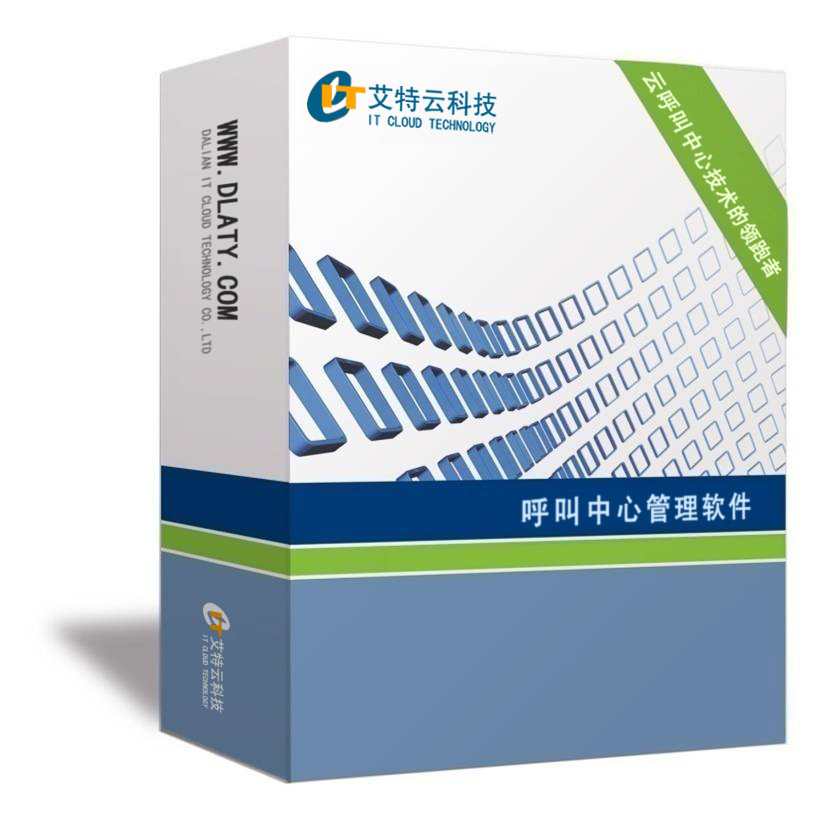

呼叫中心
|  | 产品编号：ATY-7-1 产品价格：￥ 产品规格：软件、硬件、一年免费维护 |
| 详细参数： 随着国内经济的飞速发展，与此同时国内中小企业之间的竞争也是异常的残酷，企业仅仅靠优秀的产品已不足以取胜，更需要优秀的客户服务。呼叫中心做为企业和客户保持紧密接触的窗口，在产品宣传、技术支持、售后服务、创造商机、增加业务收入等方面都起着越来越重要的作用。然而企业如果能够建立自己的客户关系管理系统将有助于更有效地为用户服务、降低运营成本、提高工作效率，增强公司的竞争能力。更能使企业立于不败之地。 艾特云小型呼叫中心系统方案解决了中小企业如何更好、更有效的管理客户资料信息，并加强了对客户的管理和及时的沟通。多年来，艾特云小型呼叫中心服务系统的开发坚持以客户为中心的原则，并且以最简、最方便的方式为客户提供服务该平台是一个高度集成的增值服务平台，它集企业通讯和复杂的增值服务于一体 集成了交换机、ＩＶＲ、传真、坐席等多种技术实现了网络时代通讯所需的常用功能。在一台服务器上集成了所有常用的呼叫中心的功能，为企业和增值服务运营商免去了使用通讯服务器的高昂成本，并能智能的提供报表和决策数据。另外，艾特云呼叫中心更是推出了适用于中小企业的自建式中小型呼叫中心。它也可以为语音增值业务商提供强大的声讯服务支持和语音短信服务支持，同时提供强大的报表分析和统计通能，为企业的增值和运营提供决策依据。 |
|